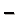
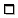

La fenêtre principale d'OmegaT contient le menu principal, la barre d'état et différents volets. Des fenêtres supplémentaires sont disponibles, ainsi que des boîtes de dialogue qui permettent de modifier les paramètres du projet OmegaT. Les informations ci-dessous résument leur utilisation ainsi que la façon de les exécuter :
Tableau 4.1. Fenêtre principale d'OmegaT
| volet dans lequel vous tapez et modifiez la traduction | |
| affiche les segments les plus proches provenant des mémoires de traduction | |
| affiche la terminologie correspondant aux éléments du segment en cours | |
| affiche les correspondances du dictionnaire trouvées pour les éléments du segment en cours | |
| affiche la traduction fournie par les services de traduction automatique | |
| contient les notes concernant le segment en cours (ex. : des traductions alternatives ou la clé en cours dans le cas des fichiers textes Clé=Valeur) | |
| contient les commentaires ajoutés par l'auteur dans les fichiers PO ou le nom de l'attribut en cours de traduction (pour les fichiers HTML) |
|
Utilisée pour valider les balises (s'ouvre avec les touches Ctrl+T, se ferme en appuyant sur Echap) |
|
|
Utilisé pour afficher le manuel de l'utilisateur (s'ouvre en appuyant sur F1, se ferme en appuyant sur Echap) |
|
|
Utilisée pour ouvrir la fenêtre contenant les statistiques du projet. Elle s'affiche en allant sur → |
|
|
Utilisée pour afficher les statistiques des correspondances du projet. Pour l'ouvrir, sélectionnez → . |
Tableau 4.3. Boîte de dialogue des paramètres

La fenêtre principale se compose de plusieurs volets, du menu principal et d'une barre d'état. Vous pouvez modifier l'emplacement de n'importe quel volet ou même le détacher dans une fenêtre séparée en cliquant sur le nom du volet et en le faisant glisser. En fonction du statut du volet, des signes différents peuvent être affichés en haut à droite de celui-ci :
Note
Si vous ne pouvez pas voir tous les volets (s'ils sont ouverts ou réduits), appuyez sur pour retrouver l'état défini dans l'installation.
Tableau 4.4. Éléments graphiques des volets
|  | réduit le volet de sorte que seul son nom soit visible en bas de la fenêtre |
|  | agrandit le volet |
 |
restaure la mise en page qui existait avant l'étape d'agrandissement |
 |
détache le volet de la fenêtre principale |
 |
replace le volet dans la fenêtre principale |
Les volets peuvent se chevaucher si vous le souhaitez. Lorsque cela est fait, les volets affichent un onglet tout en haut. Faites glisser les séparateurs situés entre les volets pour les redimensionner. Vous pouvez à tout moment aller dans pour retrouver la disposition d'origine.
Le compteur localisé dans le coin inférieur bas suit la progression de la traduction (les nombres de la colonne de gauche correspondent à l'image ci-dessus) :
Tableau 4.5. Fenêtre principale - compteurs
| 27/27 | Nombre de segments traduits / Nombre total de segments du fichier en cours |
| 9319/16338 | nombre de segments uniques traduits / nombre total de segments uniques du projet |
| 31175 | Nombre total de segments du projet (y compris les répétitions) |
| 103/114 | Nombre de caractères source / nombre de caractères cible dans le segment en cours |
D'un point de vue pratique, le couple de nombres le plus important est le second : il vous dit quelle quantité de travail a déjà été effectuée par rapport au total ou au nombre de segments uniques. Dans l'exemple, le projet est bien sûr finit puisque tous les segments uniques ont été traduits.
Volet dans lequel vous tapez et modifiez votre traduction. Le volet Éditeur affiche le texte du document partiellement traduit : le texte déjà traduit est affiché dans sa traduction tandis que le texte non traduit reste dans sa langue d'origine. Le texte affiché est séparé en segments. Vous pouvez faire défiler le document et double-cliquer sur n'importe quel segment pour l'ouvrir et le modifier. Dans le cas ci-dessus, les segments déjà traduits sont affichés en jaunes.
Un des segments ci-dessus est le segment en cours. Il s'agit du segment qui est affiché en deux parties. Le partie supérieure
est dans la langue source, en caractère gras et sur un fond vert tandis que la partie inférieure correspond à la ligne d'édition
et se termine par un marqueur : le marqueur est<segment nnnn> avec nnnn correspondant au numéro du segment dans le projet. Utilisez la partie supérieure comme référence et remplacez ou
modifiez son contenu par votre traduction dans la ligne d'édition.
En fonction du comportement que vous avez choisi pour la ligne d'édition, pour un segment non traduit celle-ci peut être : vide, contenir le texte source ou contenir la traduction de la chaîne de caractères la plus proche de celle que vous êtes en train de traduire. Lorsque vous passez au segment suivant, la traduction est validée et sauvegardée. Si vous voulez que la traduction soit identique à la source, il suffit de vider la ligne d'édition en supprimant tout le texte (sélectionnez le texte avec Ctrl+A et supprimez-le avec Suppr). OmegaT est capable d'enregistrer les traductions qui sont identiques à la source. Ceci est utile pour les documents qui contiennent des noms de marque, des noms propres, ou des parties qui sont dans une troisième langue et n'ont pas besoin d'être traduites. Voir Options de la ligne d'édition pour plus de détails.
Si vous effectuez un clic droit dans le volet Editeur, un menu contextuel s'ouvre et propose les options Couper, Copier, Coller (soit les mêmes fonctions que les raccourcis Ctrl+X, Ctrl+C et Ctrl+V) ainsi que la fonction Atteindre un segment.

Le volet Correspondances affiche les segments les plus proches provenant de la mémoire de traduction interne au projet qui est créée en temps réel au cours de votre traduction et des mémoires de traduction secondaires que vous avez importées depuis vos travaux précédents ou que vous avez reçues de la part de votre client ou de votre agence de traduction.
Lorsque vous passez au segment suivant, la première correspondance (celle ayant le meilleur pourcentage de correspondance) est sélectionnée automatiquement. Vous pouvez sélectionnez une correspondance différente en appuyant sur . Bien sûr, s'il n'existe pas de correspondance n° 5, appuyer sur Ctrl+5 n'aura aucun effet. Pour utiliser la correspondance sélectionnée dans votre traduction, appuyez sur pour remplacer la ligne d'édition par la correspondance ou appuyez sur pour l'insérer à l'emplacement du curseur.
Le pourcentage de correspondances correspond à peu près au nombre de mots communs dans les deux segments correspondants divisé par le nombre de mots présents dans le segment le plus long des deux. La correspondance sélectionnée est mise en gras, les mots qui sont absents dans le segment que vous traduisez sont en bleu et les mots qui entourent les parties manquantes sont en vert. Dans l'exemple ci-dessus, le segment source est Context menu command. La meilleure correspondance est de 100 % car tous les mots correspondent. C'est la même chose pour les deux correspondances suivantes. La correspondance n° 4 est proche, mais présente des différences. La ligne contenant le pourcentage de correspondances inclut aussi le nom de la mémoire de traduction qui contient la correspondance. Si aucun nom de fichier n'est affiché, cela signifie que la source est la mémoire de traduction interne au projet. Segments orphelins (la correspondance n° 2) décrit des segments de la mémoire de traduction par défaut du projet qui n'ont pas de segments source correspondants.
Il y a en fait trois estimations de correspondances disponibles (66/66/30 dans le cas de la correspondance n° 4 ci-dessus). Elles sont définies comme suit :
-
pourcentage de correspondance lorsque l'extension lemmatiseur est utilisée
-
Correspondance par défaut d'OmegaT - le nombre de mots ayant des correspondances (les caractères numériques et les balises sont ignorés) divisé par le nombre total de mots
-
Correspondance OmegaT, incluant les caractères numériques et les balises
Dans , un certain nombre de variables permettent de configurer l'affichage du volet correspondances :
L'image ci-dessus présente le modèle d'affichage par défaut des correspondances. Le contenu peut être personnalisé en utilisant les variables suivantes :
Tableau 4.6. Paramètres du volet Correspondances
${id} |
Nombre de la correspondance compris entre 1 et 5 |
${sourceText} |
Texte source de la correspondance |
${targetText} |
Texte cible de la correspondance |
${diff} |
Chaîne de caractères montrant les différences entre la source et la correspondance. Astuce : utilisez ceci si le texte que vous avez traduit a été mis à jour. |
${score} |
Pourcentage obtenu avec le lemmatiseur |
${noStemScore} |
Pourcentage obtenu sans tenir compte des nombres et des balises |
${adjustedScore} |
Pourcentage ajusté |
${fileNameOnly} |
Nom de la TMX |
${filePath} |
Chemin d'accès complet à la TMX |
${fileShortPath} |
Chemin d'accès à la TMX à partir de la racine /tm |
${creationID} |
Auteur de la correspondance |
${creationDate} |
Date de création de la correspondance |
${fuzzyFlag} |
Indique que la correspondance est partielle (pour le moment, existe uniquement pour les fichiers PO possédant la marque #correspondance partielle) |
Le volet Glossaires vous permet d'accéder à votre propre collection d'expressions et de terminologies spécialisées (que vous avez créées et enregistrées dans vos fichiers glossaires). Il montre la traduction des termes présents dans le segment en cours. Le segment source de l'exemple ci-dessous était « Commande de menu contextuel » (comme dans l'exemple du volet Correspondances ci-dessus) et les termes affichés se trouvaient dans les glossaires disponibles (Microsoft's Term collection et le glossaire slovène du groupe d'utilisateurs Linux).
Si l'option TransTips est activée (), cliquer-droit sur le mot souligné dans le segment source permet d'ouvrir un menu contextuel qui suggère les traductions proposées par votre glossaire. Sélectionner l'une de ces traductions permet de l'insérer à l'endroit où se trouve le curseur dans le segment cible. Il est également possible de surligner votre alternative préférée dans le volet Glossaires et de l'insérer dans le segment cible en cliquant-droit sur la sélection.
Les dictionnaires sont les équivalents électroniques des dictionnaires papier (comme Merriam Webster, Duden, Larousse etc.) que vous pouvez avoir sur votre bureau. Pour plus de détails, voir le chapitre : Dictionnaires
Un même segment source peut avoir différentes traductions en fonction du contexte. Si la traduction actuelle du segment ne convient pas, l'utilisateur peut sélectionner . Le segment cible saisi après cette action sera alors considéré comme une traduction alternative pour le segment source. Il est possible de définir l'une des alternatives - la plus probable d'entre elles par exemple - comme traduction par défaut en sélectionnant
Le traducteur peut adjoindre des notes au segment en cours, ce qui lui permet, par exemple, d'y revenir plus tard et de refaire sa traduction, de vérifier que les traductions alternatives sont correctes ou d'interroger ses collègues pour avoir leur avis. Il est possible de se déplacer d'une note à l'autre en cliquant sur et .
Certains formats de fichiers conçus spécialement pour le travail de traduction (ex : les fichiers PO) permettent l'ajout de commentaires. De cette façon, le traducteur peut obtenir le contexte entourant le segment à traduire. Dans l'exemple ci-dessous, l'auteur du fichier PO a intégré un avertissement afin que le traducteur vérifie la longueur de la traduction :
Le volet Traduction automatique, lorsqu'il est ouvert, contient les suggestions de traduction proposées par les outils de traduction automatique pour le segment en cours. Appuyer sur Ctrl+M permet de remplacer la traduction du segment en cours par la traduction suggérée. Pour plus de détails, voir le chapitre : Traduction automatique
Le menu principal donne accès à toutes les fonctions d'OmegaT. Voir l'annexe Menu principal pour une description complète de tous les menus et des éléments de menu. Les fonctions les plus fréquemment utilisées sont accessibles grâce à leur raccourci clavier (une fois habitués à ceux-ci, il ne vous sera plus nécessaire de naviguer entre les menus pendant la traduction). Pour plus de détails, voir le chapitre : Menus et raccourcis clavier.
La barre d'état affiche les messages relatifs au flux de travail dans le bas de la fenêtre principale. Cette barre donne à l'utilisateur un retour concernant certaines opérations spécifiques en cours. Elle affiche également le nombre de correspondances partielles et de correspondances de glossaire pour le segment en cours.
La fenêtre Fichiers du projet liste les fichiers du projet et affiche d'autres informations relatives au projet. Cette fenêtre s'affiche automatiquement lorsqu'OmegaT charge un projet. Utilisez pour ouvrir cette fenêtre et Echap pour la fermer. La fenêtre Fichiers du projet affiche les informations suivantes :
-
La liste de tous les fichiers traduisibles du projet. Il s'agit de tous les fichiers présents dans le dossier de fichiers source du projet qui sont écrit dans un format qu'OmegaT est en mesure de traiter. Cliquer sur n'importe lequel de ces fichiers provoquera l'ouverture de celui-ci (dans le volet Editeur, ce qui permet d'effectuer sa traduction).
-
Le fichier actuellement ouvert dans le volet Editeur est mis en évidence grâce à un fond bleu. Appuyer sur Entrée déplacera le volet Editeur au début du fichier sélectionné
-
Les entrées de fichier comprennent notamment leur nom, leurs types de filtres de fichier, leur encodage ainsi que le nombre de segments que chaque fichier contient
-
le nombre total de segments, le nombre de segments uniques (présents dans l'ensemble du projet), et le nombre de segments uniques déjà traduits sont affichés dans le bas de la fenêtre
Le nombre de segments uniques est calculé en soustrayant les segments doubles à la somme de tous les segments. (La définition du mot « unique » est sensible à la casse : « Run » et « run » sont considérés comme étant deux mots différents)
La différence entre le « Nombre total de segments » et le « Nombre de segments uniques » donne une idée approximative du nombre
de répétitions présentes dans le texte. Veuillez noter cependant que ces chiffres n'indiquent pas si les répétitions sont
pertinentes ou non : ils peuvent se rapporter à des phrases relativement longues et répétées un certain nombre de fois (ce
qui serait une bonne chose pour vous) ou à un tableau de mots clés (ce qui est moins utile). Le fichier project_stats.txt situé dans le dossier omegat de votre projet contient des informations plus détaillées sur les segments. Celles-ci sont séparées
par fichier.
Modifier les règles de segmentation peut avoir pour conséquence la modification du ratio segments/segments uniques. Il est cependant préférable que ceci soit évité une fois la traduction du projet commencée. Pour plus de détails, voir le chapitre : Règles de segmentation.
Ajouter des fichiers au projet : Il est possible d'ajouter des fichiers source au projet en cliquant sur « . Ceci copie les fichiers sélectionnés dans le dossier source et recharge le projet pour importer les nouveaux fichiers. Il est également possible d'ajouter des fichiers source provenant
de pages internet (MediaWiki) en cliquant sur et en saisissant l'URL correspondant.
La fenêtre Recherche textuelle permet de trouver un segment spécifique dans un projet. Plusieurs fenêtres de recherche peuvent être ouvertes simultanément. Pour ouvrir une nouvelle fenêtre de recherche, appuyez sur Ctrl+F. La fenêtre Recherche textuelle est composée d'un champ de saisie destiné aux chaînes de caractères ou aux mots clés à trouver, de cases à cocher et de boutons d'option (qui permettent de sélectionner les paramètres de la recherche) et d'une zone d'affichage, où apparaissent les résultats de la recherche. Pour plus de détails, voir le chapitre : Recherche .
La fenêtre de validation des balises détecte et liste toutes les erreurs et incohérences de balises de la traduction. Pour ouvrir la fenêtre de validation des balises, appuyez sur La fenêtre contient un tableau à 3 colonnes ainsi qu'un lien vers le segment et son contenu source et cible :
Les balises sont écrites en bleu et en gras pour permettre une meilleure comparaison entre l'original et la traduction. Cliquez sur le lien pour aller directement au segment dans le volet Éditeur. Corrigez l'erreur si nécessaire et appuyez sur pour retourner à la fenêtre de validation des balises et corriger d'autres erreurs. Dans le premier et le troisième cas ci-dessus, les balises ne sont pas appariées correctement, et dans le deuxième cas le signe < a été oublié dans la balise de début.
Les erreurs de balise correspondent à des cas où les balises de la traduction ne correspondent plus, par leur ordre ou par leur nombre, aux balises du segment original. Certaines erreurs de balise signalées dans la fenêtre de validation des balises sont nécessaires et bénignes, d'autres causeront des problèmes lorsque le document traduit sera créé. Les balises représentent généralement un certain type de formatage du texte original. Simplifier le formatage du texte original du fichier source avant le début de la traduction contribue grandement à réduire le nombre de balises.
La fenêtre des statistiques - accessible via Outils > Statistiques - affiche les statistiques du projet OmegaT en cours, à la fois sous une forme résumée et en faisant le détail pour chaque
fichier à traduire. L'affichage statistique, disponible en tant que fichier à séparation par tabulation project_stats.txt (sous-dossier omegat), peut être ouvert dans un tableur pour répondre aux besoins de l'utilisateur. Utilisez , pour copier/coller le contenu.
Les statistiques des correspondances sont accessibles via L'évaluation est assez gourmande en termes de processeur et peut prendre beaucoup de temps. Pour cette raison, une barre de progression s'affiche pendant le calcul. En ce qui concerne les catégories, les standards qui s'appliquent de facto dans l'industrie et qui classifient les correspondances dans les groupes suivants sont utilisés : Répétitions, Correspondance exacte, 95 %-100 %, 85 %-94 %, 75 %-84 %, 50 %-74 % et Aucune correspondance. Les correspondances sont calculées aussi bien pour les segments que pour les mots et les caractères (incluant ou non les espaces). Veuillez noter qu'il peut exister des petites différences entre les chiffres d'OmegaT et ceux affichés par d'autres outils de TAO.
Veuillez noter que ces totaux représentent une bonne (ou une aussi bonne que possible) approximation du travail réalisé et peuvent ainsi servir de base à un calcul du coût et du prix de la traduction.
Les espaces entre les segments ne sont pas pris en compte dans la dernière colonne. Les répétitions sont des segments identiques qui apparaissent plusieurs fois dans le texte. Le premier segment et son contenu sont classés dans le groupe « aucune correspondance », et le reste des segments (semblables) est classé « répétition du premier ». Si la traduction de plusieurs segments source identiques existe déjà dans la mémoire de traduction du projet, ces segments, ainsi que d'autres segments uniques déjà traduits, seront classés « correspondance exacte ». Si besoin est, le nombre de segments uniques est affiché dans la fenêtre des statistiques standards, indépendamment du fait qu'ils aient été traduits ou non.
Le reste des catégories (50-100%) concerne les segments non traduits possédant une correspondance partielle. Les correspondances
partielles peuvent tout aussi bien provenir du dossier /tm - et pas uniquement de la mémoire de traduction interne du dossier /omegaT, comme c'est le cas pour les répétitions et les correspondances exactes. La seule différence avec la mémoire de traduction
project_save c'est que les MTs externes ne peuvent pas donner de correspondances exactes à 100%. Pour ne pas utiliser les MTs externes
lors du calcul, il faut soit vider le dossier /tm soit changer (temporairement) les paramètres du projet de sorte que la valeur
des /tm indique un autre emplacement.
Les statistiques des correspondance sont séparées par tabulation et il est possible d'utiliser et pour les copier/coller dans un tableur ou dans un logiciel de comptabilité. Une fois calculées, les données sont également
accessibles depuis omegat/project_stats_match.txt. Veuillez noter que le fichier est horodaté mais que ce calcul (contrairement aux statistiques standards) n'est pas instantané
et peut donc rapidement devenir obsolète.
Le navigateur d'aide (qui affiche ce manuel) peut être ouvert en appuyant sur la touche F1 ou en allant dans à partir du menu principal. Dans la fenêtre, le manuel ainsi que deux boutons (Retour et Table des matières) apparaissent. Le manuel de l'utilisateur est un document HTML contenant des liens amenant aux différents chapitres. Cliquer sur l'un des liens (comme vous le feriez sur un navigateur web) affiche la page désirée dans la fenêtre du manuel.
Le manuel de l'utilisateur est situé dans le sous-dossier docs à l'intérieur du dossier d'installation OmegaT, de sorte que
vous puissiez, par exemple, voir le manuel en anglais en ouvrant le fichier docs/en/index.html dans votre navigateur. Ouvrir le manuel de l'utilisateur par ce biais permet également de suivre des liens externes, dans
la mesure où le navigateur d'aide intégré n'accepte pas les liens Internet externes.